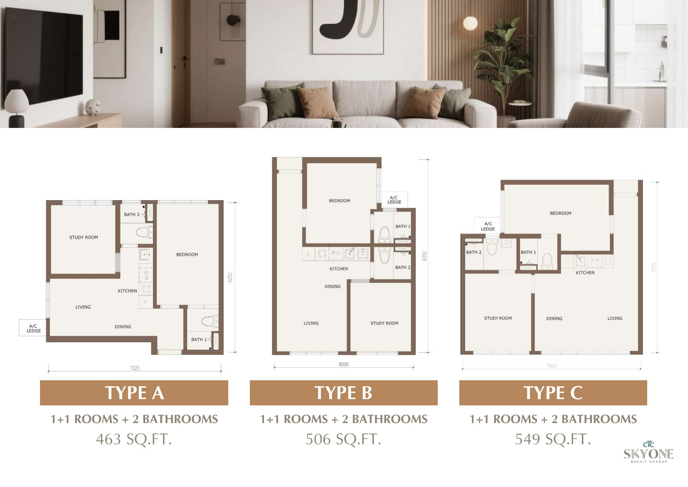

Many buyers hear that a Johor Bahru condo is within walking distance of Singapore transport. But walking to CIQ and walking to RTS are not the same type of location.
First, Walk to CIQ and Walk to RTS Are Different
A Walk-to-CIQ condo is positioned around the existing JB Sentral and CIQ crossing system. R&F Princess Cove and Summer Suites are two examples.
A Walk-to-RTS condo is positioned around Bukit Chagar RTS station. Buyers are looking at how they may walk from home to the RTS station, clear immigration and take the train to Woodlands North when passenger service begins. Aethera Residences and CTC SkyOne belong to this group.
This article is not a four-project comparison. It focuses on one buyer question: if you want to live within walking distance of Bukit Chagar RTS, should you consider Aethera Residences or CTC SkyOne?
If you first need a wider explanation, read my guide to Walk to CIQ vs Walk to RTS.
Aethera vs SkyOne at a Glance
| What to compare | Aethera Residences | CTC SkyOne |
|---|---|---|
| RTS position | Project material shows a proposed covered link and an estimated walk of about 400 metres | Project material states about 300 metres to Bukit Chagar RTS; buyers should check the final walking route and shelter |
| Project size | 786 homes in one 52-storey tower | 1,605 homes across three towers, plus 22 retail lots |
| Layout direction | More conventional two- and three-bedroom homes, with selected dual-key and larger options | Many compact dual-key and triple-key choices, plus larger unit types |
| General feel | More suitable for buyers who place own stay and a sheltered RTS route first | More active mixed-use setting with stronger rental and room-sharing flexibility |
| Main trade-off | Fewer large retail choices beside the project; the final bridge route still needs confirmation | Higher density; a short stated distance does not by itself confirm a fully covered walk |
1. A Shorter Distance Does Not Always Mean an Easier Walk
On paper, SkyOne is closer. Its project information states about 300 metres to Bukit Chagar RTS. Aethera is presented at about 400 metres.
However, buyers should not compare only the number of metres. The more useful questions are:
- Where is the station entrance?
- Is the full route sheltered from rain and afternoon heat?
- Are there road crossings, stairs or changes in level?
- Does the route stay open at the hours you travel?
Aethera's main advantage is the proposed covered link bridge shown in its project material. If the final route is delivered as planned, this can make the daily walk more comfortable even if the stated distance is slightly longer.
SkyOne is also positioned as walkable to RTS, but I would not describe its whole route as a confirmed direct covered bridge unless the final access plan shows this clearly. Before buying either project, walk the planned route and verify the latest developer and station-access information.


2. Aethera Feels More Like an Own-Stay Choice
In my view, Aethera makes more sense for buyers who want to create a home in JB while keeping a practical link to Singapore.
Its layout range includes regular two- and three-bedroom homes, selected dual-key units and larger family or duplex options. This gives buyers more choices if they want a study room, room for children or a home that can support a longer stay.
The buyer I can imagine here may be renting in Singapore today but plans to live in Johor Bahru later. That buyer may value a more normal home layout and a sheltered walk to RTS more than the highest possible number of rentable rooms.
Aethera is not only for own stay. It also has selected dual-key layouts. But its overall layout mix gives it a stronger own-stay and family-living direction.
3. SkyOne Gives Investors More Layout Flexibility
SkyOne has a different strength. Many of its main layouts use dual-key or triple-key planning. This can give an owner more ways to use the unit.
For example, an owner may stay in one part and rent another part, or rent separate spaces to different tenants if building rules and the tenancy setup allow it. This flexibility may appeal to investors, cross-border workers or households that want some separation inside one property.
However, multi-key does not guarantee a better return. More rooms can also mean higher furnishing cost, more utility planning, more tenant management and more competition from similar units. Always calculate net rent after monthly charges, vacancy, repairs and management.
Also, not every SkyOne unit should be described as multi-key. Buyers should check the exact layout and approved use of the unit they are considering.

4. SkyOne Has the Busier City Setting
SkyOne may feel more active at street level. The development includes retail lots and sits near city-centre commercial activity. Project material also places it near SKS City Mall and other shopping choices in the wider JB city area.
This can matter to a buyer who wants food, small shops and a busier environment close to home. The mixed-use setting may also be easier to explain to some short- or medium-term tenants.
Aethera has its own commercial component, but the immediate setting may feel quieter. Larger shopping choices such as City Square are in the wider city-centre catchment, but buyers should not assume every trip will be a comfortable walk. At times, a short Grab ride may be the more practical choice.
This is not automatically a weakness. Some own-stay buyers prefer a quieter home and do not want heavy retail activity directly below them.
5. Density Changes the Daily Experience
Aethera has 786 homes in one tower. SkyOne has 1,605 homes across three towers.
A larger project can support more facilities, retail activity and a wider rental market. It can also mean more people using the entrance, lifts and shared facilities during busy hours.
A smaller project is not always quiet, and a larger project is not always crowded. Lift numbers, lift zoning, parking flow and building management matter. Still, buyers who plan to stay themselves should not ignore the difference in scale.
Who May Prefer Aethera Residences?
Aethera may suit you if:
You are planning to live in the unit, want a more conventional home layout, value the proposed covered RTS route, or expect to move from Singapore to JB with a partner or family.
Aethera may not suit you if:
Your first priority is a very compact multi-key investment setup, you want strong retail activity immediately around the building, or you do not want to depend on a future bridge plan that still needs final verification.
Who May Prefer CTC SkyOne?
SkyOne may suit you if:
You want a compact unit near RTS, prefer multi-key flexibility, accept a higher-density project and like having more retail and city activity nearby.
SkyOne may not suit you if:
You want a quieter low-density home, need a confirmed fully sheltered route, dislike commercial-strata living or do not want to manage a more complex rental setup.
My View: Choose the Daily Routine, Not the Marketing Label
I would not say Aethera is better than SkyOne for everyone.
For own stay, Aethera has the clearer story. Its proposed covered connection and more conventional home layouts can suit someone who wants to live in JB and commute through RTS.
For rental flexibility, SkyOne has the clearer story. Its multi-key choices, larger project scale and more active commercial setting may suit an owner who is ready to manage the extra moving parts.
The final choice should come after checking the exact unit price, monthly charges, layout, view, lift arrangement, walking route and current project documents. A 300-metre or 400-metre headline alone is not enough.
View the Two Project Pages
Not sure which RTS-area project fits your plan?
Tell me whether you are buying for own stay, cross-border commuting or rental. I can help you compare the current units without treating either project as the answer for every buyer.
Compare Aethera and SkyOne on WhatsAppNote: Project distances, bridge plans, layouts, unit counts, retail components and access routes are based on project information available for this draft. Infrastructure, approvals, pricing, availability and final routes can change. Confirm the selected unit and latest developer-issued documents before making a purchase decision.